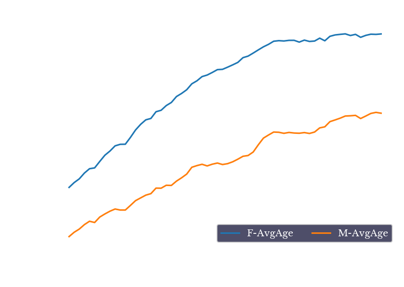
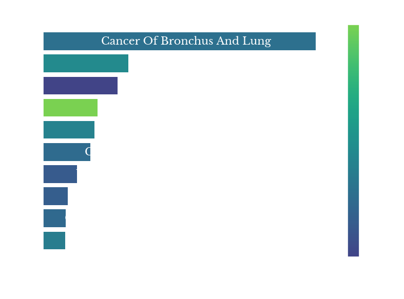

Cause of Death in the USA: 1959-2020
Wed, 07 Dec 2022
Cause Of Death, Data Analysis, Data Visualization, Medicine, Statistics, Vital Statistics
This post takes another look at Mortality Multiple Cause-of-Death records from the U.S. Division of Vital Statistics. Previous posts have analyzed records for the year 2016 and also deaths due to Influenza & Pneumonia in 2017. In this post, records from 1959 to the 2020, the latest year currently available, are analyzed.The Data
Mortality Multiple Cause-of-Death files come in compressed fixed-width files along with corresponding dictionary files that contain the mapping of text columns to specific fields. One of the main challenges with this data is that the format has been changed numerous times over the years, making consolidation of the data across time challenging. To make matters worse, the meanings of even the few fields that are used somewhat consistently shift over time. Among these are age, race, and worst of all the underlying cause of death (UCOD) field. Specifically, in the oldest records, UCOD is encoded in ICD-7 codes. One decade later, this changes to ICD-8, then ICD-9, and finally ICD-10 around the new millennium. The result is a lot of data wrangling.The scale of the data is fairly sizable too. Compressed using bzip2, the data takes up almost 2GB of storage, with a total of over 40 million records. Given an average compression ratio of about 20x, the uncompressed data inflates to more than 40GB.
Analysis
The first chart simply shows the count of records per year. The chart starts in 1959 with roughly 1.67 million records for the year and gradually increases to 2.86 million in 2019, an increase of 72% over the 61 year period.Figure 1: Mortality Records per Year
As seen in Figure 1, there is a dashed line that sharply falls in the year 1972. It is stated in some available documentation that only a sample of 50% of records were recorded for 1972, though no reason for this is provided. In later plots that display the raw counts of records, the counts for 1972 are multiplied by 2 to correct for this.There is a dramatic spike for the year 2020 as a result of the Covid-19 pandemic. In 2020, 529k additional deaths are recorded over the previous year. For all prior years, the average change in records is 20k with a standard deviation of 32k, making 2020 a 16-sigma event under normality assumptions, something that should happen only once in 1.5e+57 years, far longer than the currently accepted age of the universe. The extreme unlikelihood of such an event suggests that the underlying distribution has much heavier tails than the normal distribution, implying an increased occurrence of tail risks.
Figure 2: Distribution of Yearly Change in Count
Next, Figure 3 shows the average recorded age by year over the 62 years of data. The average age at death from the records gradually increases over time from about 60 and 64 to about 70 and 77 for men and women respectively, an increase of 17% and 20% respectively.
Figure 3: Average Recorded Age per Year
As the average can be skewed by untimely deaths, Figure 4 shows the three quartiles for age. In all quartiles, women tend to outlive men. In fact, during the 1990s, the median recorded age for women is less than two years below men at the 75th percentile.Figure 4: Quartiles of Recorded Age per Year
The next chart shows the percent of records over time having an underlying cause of death relating to neoplasms or circulatory disease. These two are very broad categories of disease, but are primarily dominated by cancer deaths for neoplasm and heart attacks, strokes, and other conditions relating to atherosclerosis for circulatory disease.Figure 5: Percent of Deaths Related to Circulatory Disease and Neoplasms
As seen in Figure 5, diseases of the circulatory system makeup a staggering 54% of deaths in 1959 and begin to steadily fall in the 1970s and onward. This reduction in deaths due to heart disease is attributed to a variety of factors including increased awareness, lifestyle modifications, new surgeries like bypass surgeries, new drugs, and others.There is a sharp decrease in both categories for the year 2020. This is largely explained by 351k additional deaths due to Covid-19 increasing the denominator of both fractions. The raw number of actual deaths in both cases do not experience a large decrease.
Cancer
At the same time, deaths due to cancer gradually increase from about 16% of deaths in 1959 to about 24% in 1992. This increase is dominated by the rise of lung cancer due to the increased popularity of smoking in prior years.Figure 6: Count of Deaths due to Lung and Related Cancers
Figure 6 shows the precipitous rise of deaths due to lung cancer over the period. The number increases from 35k in 1959 to a peak of almost 160k in 2005, an increase of over 350%!|  | |
{kind=link}
{kind=link}
{kind=link}
{kind=link}
Figure 7: Top 10 Cancer Deaths in 1960, 1980, 2000, and 2019
Figure 7 shows the ten leading types of cancer represented in the records for four different years. Colon and breast cancer lead in 1960 but fall to 2nd and 3rd place in the later three plots.The color of the bars represents the average age recorded at death for each condition. Prostate cancer is the brightest bar, showing that it typically contributes to death in more advanced age groups. Breast and brain cancer represent some of the darkest bars, suggesting they contribute to death in younger age groups.
Figure 8: Records for Cancer of Pancreas, Colon, and Breast
One type of neoplastic disease which shows steady growth over the period is that of pancreatic cancer. In fact, in the most recent data, pancreatic cancer is the leading cause of cancer death, excluding lung cancer. Figure 9 shows the counts of cancer deaths involving the pancreas, colon, and breast. Colon and breast cancer rates have decreased somewhat in recent years, likely due to improvements screening and treatment options. However, pancreatic cancer rates have continued to grow largely unchecked, likely due to the relative lack of good treatment options for the disease.Infectious Disease
Figure 9 shows the rates of several other types of diseases falling under the categories of infectious, parasitic, and digestive diseases. The lines for infectious and parasitic show a sharp increase from the mid-80s to the mid-90s.Figure 9: Rates of Infectious, Parasitic, and Digestive Diseases
As can be seen from the red line, the primary factor driving the increase in infectious diseases is the AIDs epidemic of the late 80s and early to mid-90s. Figure 10 shows the top 9 infectious disease categories for 1995.Figure 10: Top 9 Infectious Disease Categories for 1995
Diseases involving HIV dominate the results. Fortunately, the numbers begin declining in the years following 1995 and continue to decline into the present, likely due to increased awareness, prevention, and improved treatment options.Hepatitis is the second leading infectious disease cause for the period. These codes however are separate from diseases of the liver such as cirrhosis, which are captured by the green line.
Pneumonia and Covid
Figure 11 shows the yearly count of records with a UCOD attributed to Pneumonia or lower respiratory tract infections (LRTI). The time-series is relatively stationary with an average of 64k and standard deviation of 11k.
Figure 11: Deaths due to Pneumonia, Influenza, and LRTI
There is a large spike of 92k deaths in the year 1998, the vast majority of which fall under the ICD-9 code 486: Pneumonia, organism unspecified. Also of note, the number of deaths falling into these categories looks unremarkable for the year 2020. Specifically, there is not a compensatory drop in pneumonia deaths.Figure 12: Records with Pneumonia, Circulatory and Provisional Codes
This is shown more explicitly in Figure 12. For the year of 2020, there is a massive spike in records under provisional codes (blue line), from 0 the previous year to 351k records. The specific provisional code used is U071, for Covid-19.As noted above, however, the total number of records increased by 529k in 2020 from the previous year, leaving an additional increase of 178k beyond those records with provisional code U071. Note that an increase of records that is three standard deviations above the mean is only ~115k, so this is still a large increase not directly explained by the UCOD codes.
Figure 13: Count of Additional Records in 2020 by ICD-10 Category
Figure 13 shows the breakdown of the additional records by their top-level ICD-10 letter. In addition to the U-codes, there are also large increases in records with codes for diseases of the circulatory, endocrine, and nervous systems. Brighter color bars indicate a larger standard deviation computed on changes from all previous years. The change in I-codes is about a 2-sigma move, while the change in G and X-codes are 4.3 and 8-sigma moves respectively. The magnitude of many of these changes suggest they are related to the pandemic in some way.